Tutu’s View of Data
An interactive picture book, map and colored pencil kit that introduces children to data. Readers color, cut and place pieces on a map.
- Year
- 2026
- Class and project
- Graphic Design: Impact and Empathy, Boston University
- Tools and medium
- Figma, Hand Drawing, Paper Collage, Photoshop, Laser Printing, Coil Binding
- Collaboration
- With Lucy Lee
About this project
Lucy Lee and I started from Giorgia Lupi’s picture book This Is Me and Only Me and its idea of data humanism: data should feel friendly and relatable. We wanted to take that further for young readers. After researching types of data, data protection and child development, we built a story in which a child finds the magical feather of Tutu, a curious yellow cockatoo, and begins to see the data hidden in daily life. The child travels through eight data regions. In the Scam Swamps, “phishes” teach the child about phishing scams. Tutu asks the child to color, cut and rip pieces from the book and place them on a map, so the map becomes a personal data landscape. The 60 collaged pages were scanned, edited and laser-printed.

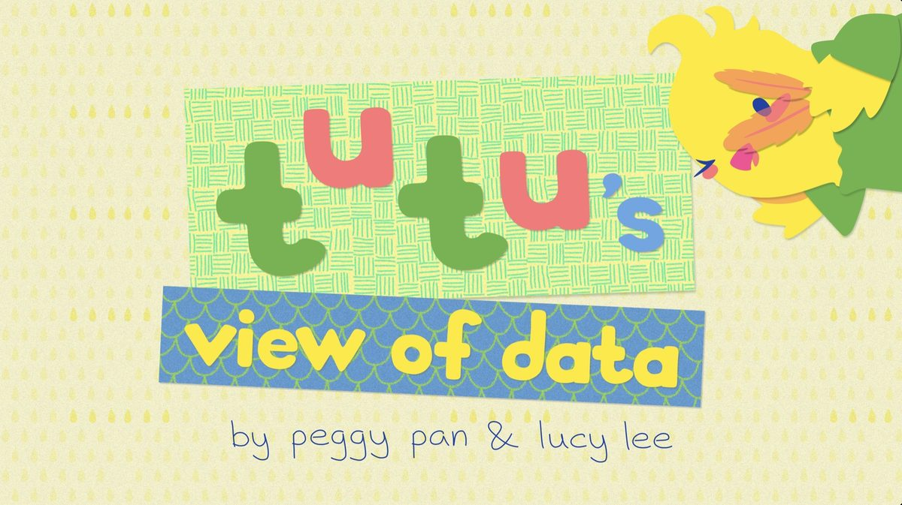


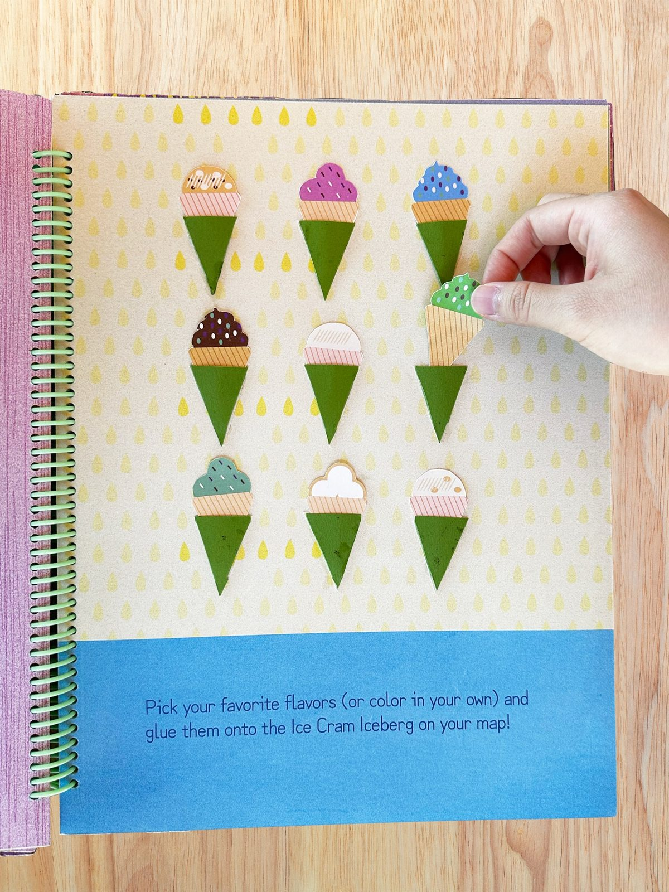

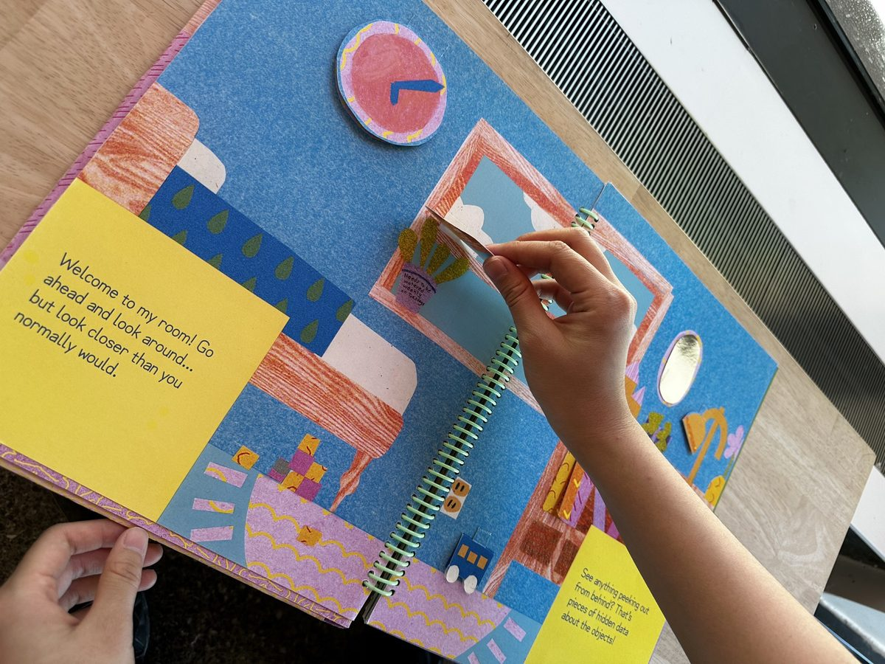

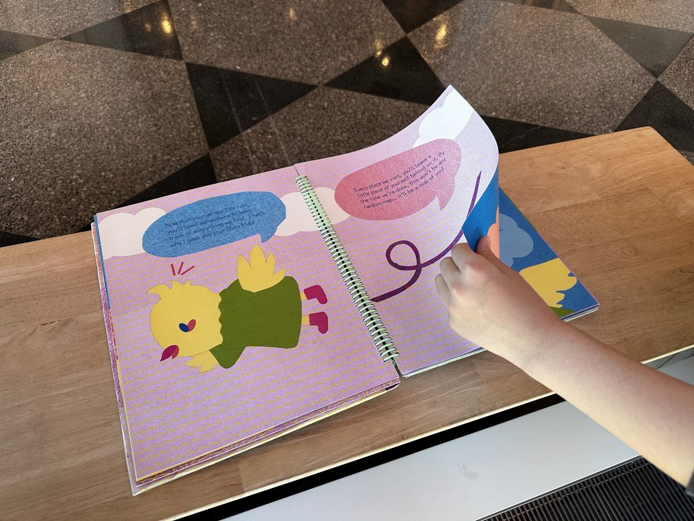

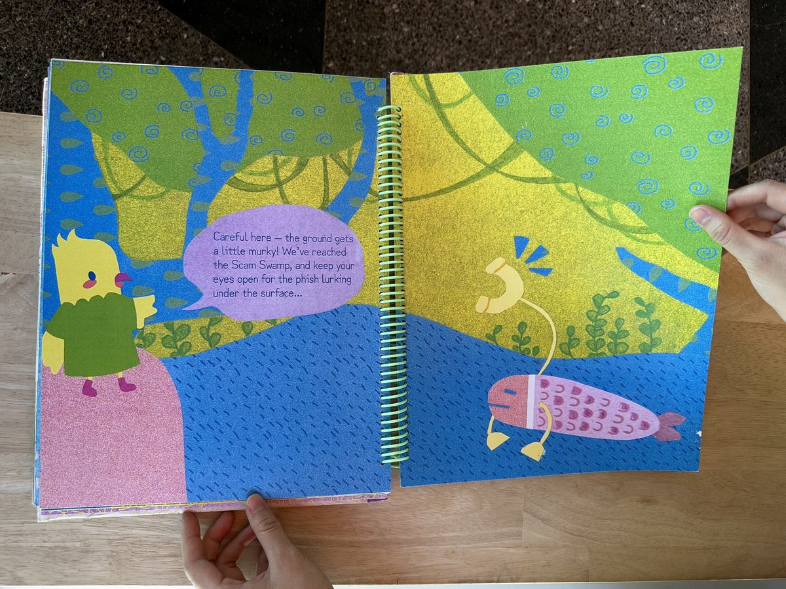

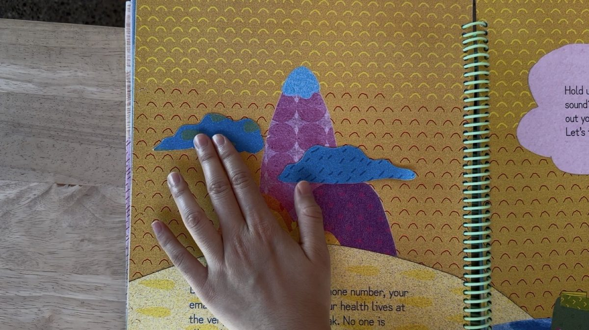

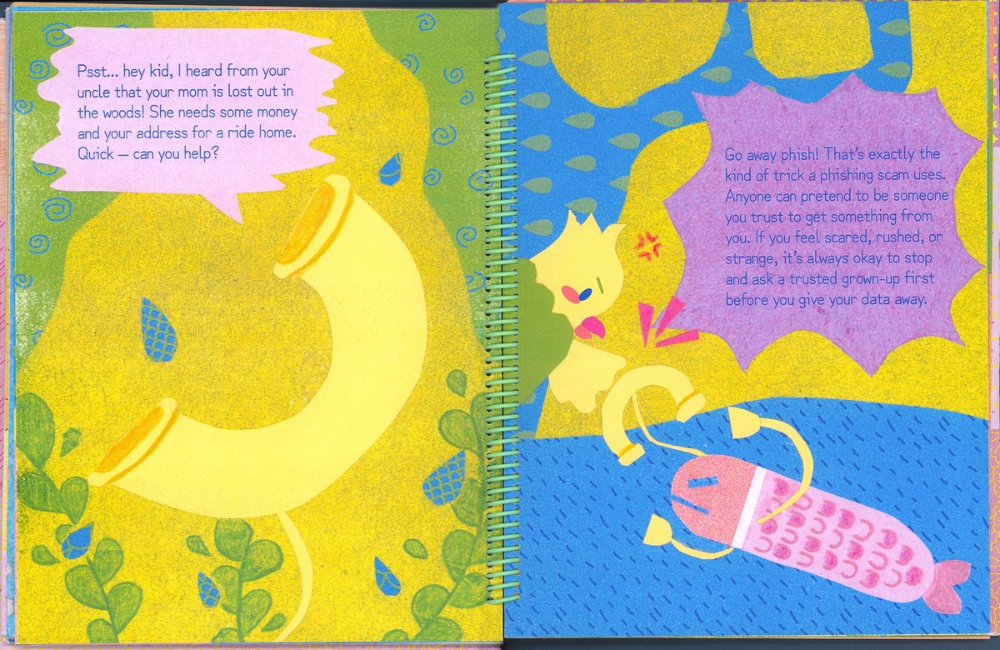

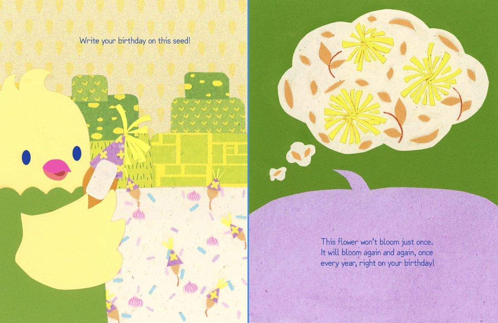

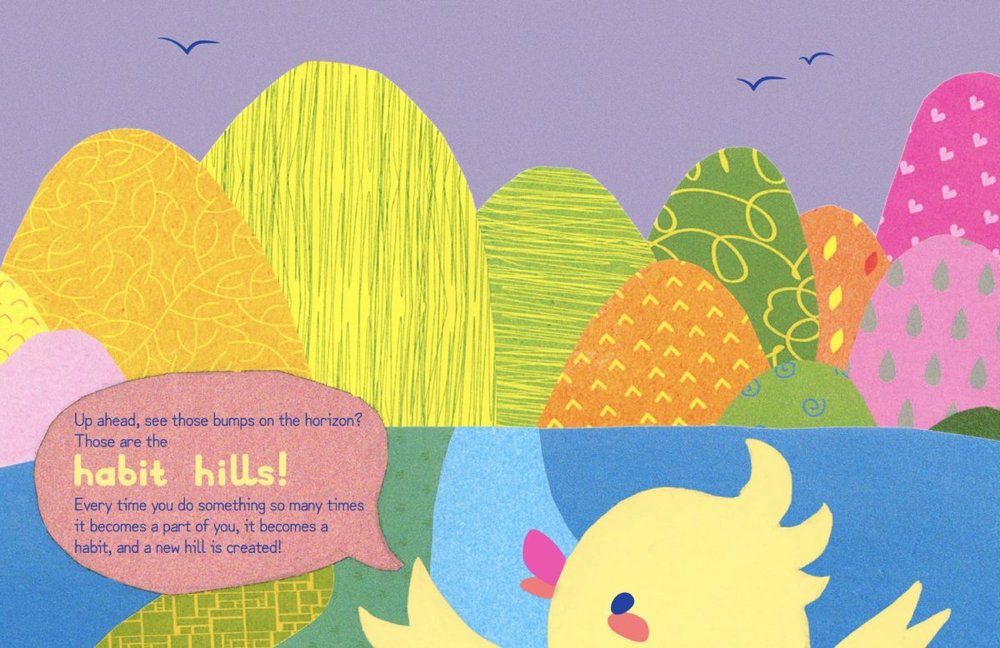

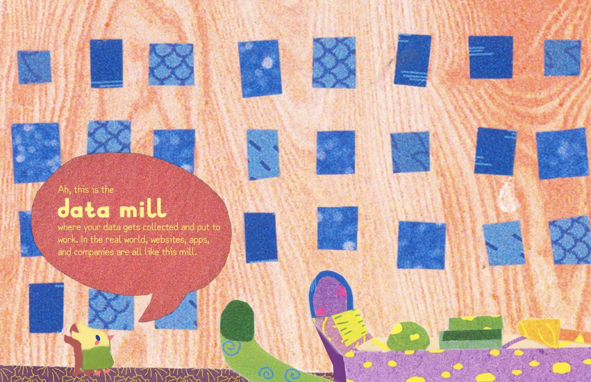

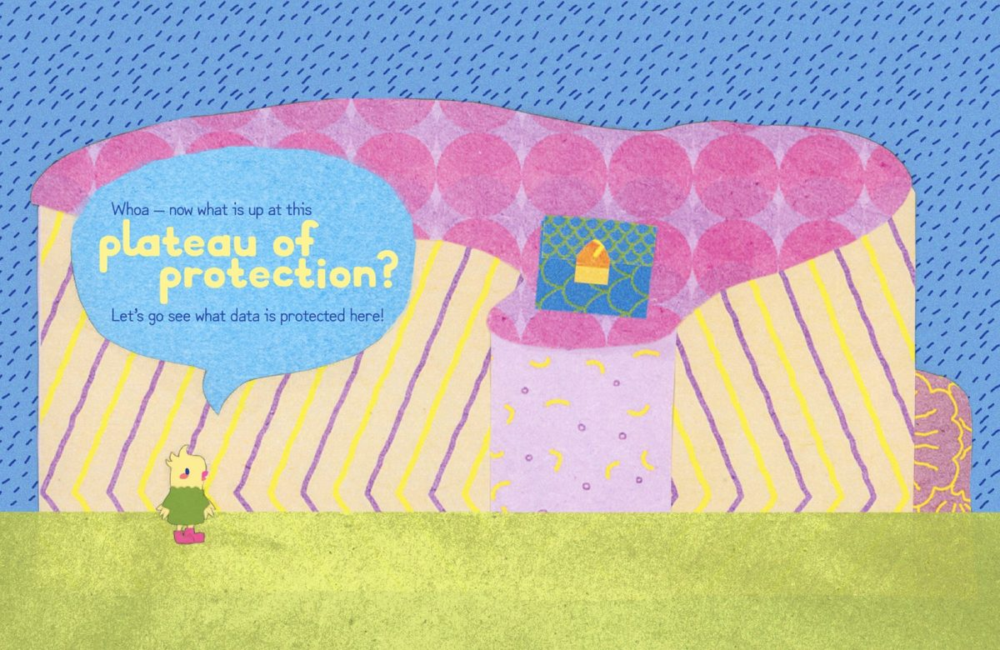

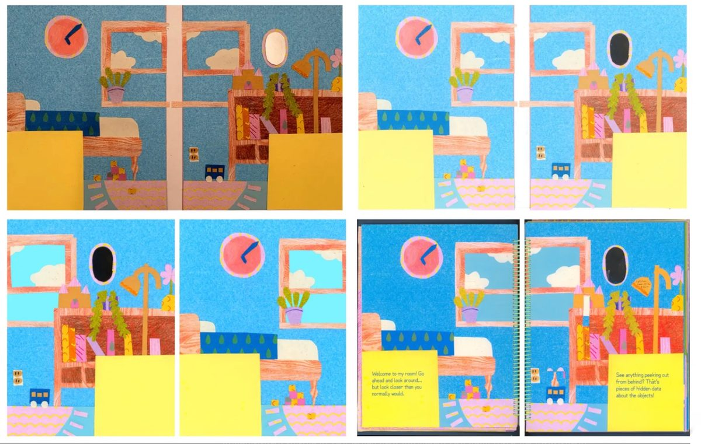